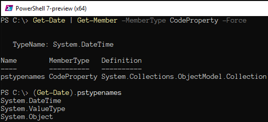

Minden adat, amit a PowerShell parancsértelmező feldolgoz, és minden eredmény,
amit előállít: egy vagy több objektum (Object ).
A képernyőn megjelenített vagy fájlba mentett információ nem más,
mint az objektumok szöveges formára alakított, "emberi fogyasztásra is
alkalmassá tett" adattartalma.
Egy információ sokféleképpen "tálalható": egy dátum adatot például megadhatunk
számhármas formájában (2020.01.05.); a hónapot betűkkel is írhatjuk, teljes
névvel vagy rövidítve (január, jan.); és a dátumhoz akár hozzátehetjük a hét
napját is, akár teljes névvel, akár rövidítve, tetszésünk szerint (hétfő, H).
Ugyanez a dátum adat ugyancsak sokféleképpen tárolható a memóriában mint
objektum. Lehet, hogy a teljes információ egyetlen számban van összesűrítve,
de az is lehet, hogy külön tárolódik az év, a hónap és a nap; lehet, hogy
a hét napja egy külön tulajdonsága a dátum objektumnak, de az is lehet,
hogy ezt az információt az év-hónap-nap alapján egy eljárás számítja ki,
valahányszor szükségünk van rá.
Egy objektum tehát sokféle adatot tárolhat, és képes lehet azokból más
adatokat is előállítani. Az objektum által tárolt adatokat az objektum
egy-egy tulajdonságának (Property ), azokat
az eljárásokat, amelyeket pedig képes végrehajtani, az objektum egy-egy
metódusának (Method ) nevezzük.
Együttesen az objektum tagjainak (Member )
hívjuk őket.
Vannak olyan adatok és eljárások is, amelyek nemcsak az adott objektumra,
hanem a hozzá hasonló, vele azonos típusú összes objektumra vonatkozó
információt hordoznak vagy állítanak elő. Ezeket a közös tagokat
statikus (static ) tagoknak mondjuk, és
mivel minden azonos típusú objektumra egyszerre vonatkoznak, inkább az
objektumok típusának (Type ) vagy
osztályának (class ) a tulajdonságai
és metódusai közé soroljuk őket.
Egy objektum tulajdonságainak és metódusainak a felderítéséhez a
Get-Member parancsmagot használjuk. Párjával, az
Add-Member parancsmaggal újabb tulajdonságokat és metódusokat
adhatunk egy objektumhoz, újabb adatokkal és képességekkel ruházva fel.
Cmdlets for Object Members
A Get-Member parancsmagnak a csővezetéken szokás átadni a
vizsgált objektumot. Egyéb kapcsoló híján a parancsmag az objektum saját
tagjait jeleníti meg; a statikus tagok megjelenítéséhez a -Static
kapcsoló használata szükséges. A megjelenítendő tagok típusát a
-MemberType paraméter argumentumaként sorolhatjuk fel;
ennek híján a parancsmag az összes nyilvános tagot felsorolja, a
-Force kapcsolóval pedig még a rejtett tagokat is.
Syntax of Get-Member cmdlet
Egy dátum objektum tulajdonságainak felderítéséhez kérjük el az aktuális
dátumot a Get-Date paranccsal, és adjuk át a csővezetéken a
Get-Member parancsmagnak, bekapcsolva a tulajdonságokat
megjelenítő paramétert:
Get-Date | Get-Member -MemberType PropertiesGet properties of a Date object
Láthatjuk, hogy egy dátum objektum a pontos idő ezredmásodpercig részletezett
adatelemeit mind egy-egy tulajdonságként tárolja. A tulajdonságok
adattartalmát a dátum objektumot azonosító kifejezés után írt, attól ponttal
elválasztott tulajdonságnévvel hívhatjuk elő. A .DisplayHint
tulajdonság megmutatja, melyik másik tulajdonságot kell megnevezni ahhoz,
hogy a felhasználó számára előkészített formában láthassuk a dátumot és időt,
a .Kind tulajdonság pedig elárulja, hogy a dátum objektum a helyi
vagy az univerzális (UTC) időértéket képviseli-e.
Display information of a Date object
A dátum objektum statikus tulajdonságait megjelenítve a dátum objektumok
közös, a dátum típusra jellemző általános tulajdonságainak
a nevét olvashatjuk.
Get static properties of a Date object
A statikus tulajdonságok adattartalmára nem is az objektumon keresztül,
hanem az objektum típusának szögletes zárójelbe tett nevét követő dupla
kettőspont után írt tulajdonságnévvel hivatkozunk.
DateTime Properties
A Get-Member a tagok felsorolása előtt mintegy címként jeleníti meg
a vizsgált objektum típusának a nevét. Ez a típusnév, valamint az összes
általánosabb alaptípus, amelyből az objektum származik, egészen a .NET típusok
közös őstípusáig, az Object osztályig bezárólag megjeleníthető
egy rejtett tulajdonság, a .pstypenames előhívásával.

Base Types of a Date object